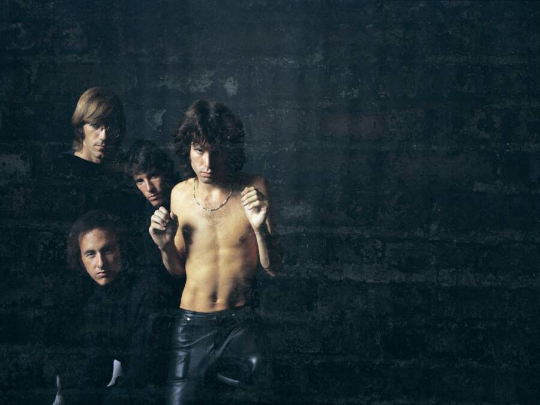
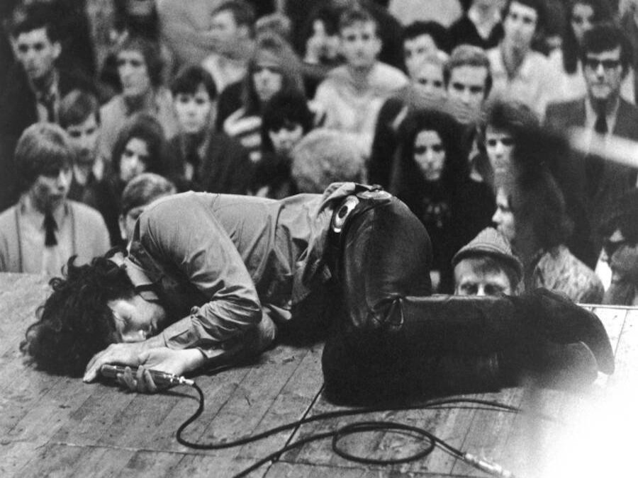
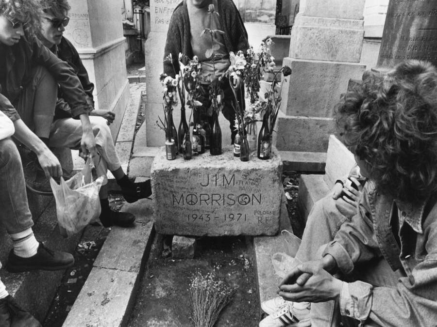

James Douglas "Jim" Morrison (Melbourne, Florida; 8 de diciembre de 1943-París, Francia; 3 de julio de 1971) fue un
cantautor y poeta estadounidense, célebre por ser el vocalista de la mítica banda de rock The Doors. Debido a sus
canciones, personalidad y actuaciones, es considerado por críticos y admiradores como uno de los cantantes más
representativos e influyentes de la historia del rock, y, debido a las circunstancias dramáticas que rodean su vida y
muerte, en la última parte del siglo XX, fue uno de los iconos de rebeldía en la cultura popular, representando la brecha
generacional y la contracultura juvenil.
Fue también muy conocido por improvisar pasajes de poesía de palabra hablada mientras la banda tocaba en vivo. Morrison se
ubicó en el número 47 en la lista de Rolling Stone de los «100 mejores cantantes de todos los tiempos», y el número
22 en los «50 mejores cantantes de rock» de la revista Classic Rock. Ray Manzarek dijo que Morrison «personificó la
rebelión de la contracultura hippie».8 Morrison es referido a veces por otros apodos, como «The Lizard King» («El rey lagarto»).
En su vida posterior, Morrison desarrolló una dependencia al alcohol. Murió a la edad de 27 años en París; se alega que
pudo haber muerto de una sobredosis de heroína, pero como no se realizó autopsia, se discute la causa exacta de su
muerte. La tumba de Morrison se encuentra en el cementerio del Père-Lachaise en el este de París.


